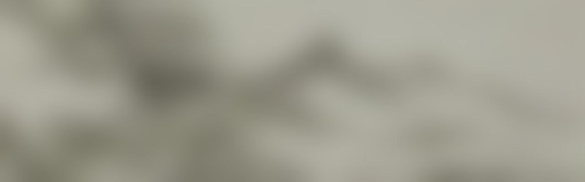

studio-vps
two at work, one waiting
waiting for you
Clean the build cache
asks to run a command
rm -rf target/debug/incremental …
Allow
Deny
allowed · running
denied · crane will ask another way
working
Adapter v4 timeline
running the tests · step 4 of 4
{{el}}
Pinned todo card
with owl, wren and lynx · 3 of 7
finished
Socket timeout
fourteen minutes ago
Open jcode
⌘O
New thread
⌘N
Quit jcode
⌘Q